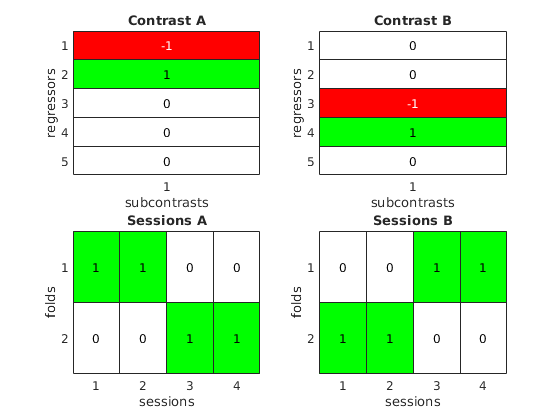

b21 = [0 1];
b43 = [0 1];Test of Cross-MANOVA using Examples
1 Perfect pattern stability
1.1 Define true situation and simulate data
Create patterns across two variables for the difference between conditions 1 & 2 and 3 & 4. They are identical, i.e. there is perfect pattern stability.
Define error covariance matrix as identity matrix.
Sigma = eye(2);Define contrasts for the difference between conditions 1 & 2 and 3 & 4.
C21 = [-1 1 0 0 0]';
C43 = [0 0 -1 1 0]';We repeat the basic design matrix in each session many times, to well estimate pattern distinctness and pattern stability.
nRep = 1000;- Create an indicator-style design matrix for a design with four conditions and a constant regressor.
- Create parameters for the five regressors across two variables.
- Create data with four sessions, with the same design matrix and parameters.
X = repmat([eye(4) ones(4, 1)], nRep, 1);
[n, q] = size(X);
b1 = [1, 2];
b2 = b1 + b21;
b3 = [3, 4];
b4 = b3 + b43;
b5 = [5, 6];
B = [b1; b2; b3; b4; b5];
[q, p] = size(B);
m = 4;
Ys = cell(m, 1);
Xs = cell(m, 1);
for k = 1 : m
Ys{k} = X * B + mvnrnd(zeros(1, p), Sigma, n);
Xs{k} = X;
end1.2 Define analyses
- A leave-one-session-out cross-validated MANOVA with contrast
C21. - A leave-one-session-out cross-validated MANOVA with contrast
C43. - A leave-one-session-out cross-validated cross-MANOVA from contrast
C21to contrastC43. - A leave-one-session-out cross-validated cross-MANOVA from contrast
C43to contrastC21. - A custom analysis with two folds, where in fold 1 contrast
C21is applied to the first two sessions and contrastC43to the last two sessions, and vice versa in fold 2.
analysis1 = {C21};
analysis2 = {C43};
analysis3 = {C21, C43};
analysis4 = {C43, C21};
analysis5 = Analysis(C21, C43, [1 1 0 0 ; 0 0 1 1], [0 0 1 1 ; 1 1 0 0]);
analyses = {analysis1, analysis2, analysis3, analysis4, analysis5};The custom analysis is specified as an object of class Analysis:
analysis5analysis5 =
Analysis: cross-MANOVA
2 folds, 4 sessions
CA: 5 x 1, 1-dimensional
CB: 5 x 1, 1-dimensional
CA->CB: 1-dimensional, 100% variance
An Analysis object has a method show which graphically displays the analysis.
analysis5.show;
1.3 Prepare analyses
Create a CrossManova object, passing data matrices, design matrices, and analysis specifications.
cm = CrossManova(Ys, Xs, analyses)Error using eval
Unrecognized function or variable 'CrossManova'.Internally, it converts all analysis specifications into Analysis objects.
cm.analysesUnable to resolve the name 'cm.analyses'.Analysis details can be listed textually or graphically.
cm.dispAnalysesUnable to resolve the name 'cm.dispAnalyses'.cm.showAnalysesUnable to resolve the name 'cm.showAnalyses'.1.4 Run analyses
cm.runAnalyses()Unable to resolve the name 'cm.runAnalyses'.The true values for the five analyses are:
- pattern distinctness 0.125
- pattern distinctness 0.125
- pattern stability 0.125
- pattern stability 0.125
- pattern stability 0.125
2 Perfect pattern instability
2.1 Define modified true situation and simulate data
Create patterns across two variables for the difference between conditions 1 & 2 and 3 & 4. They are orthogonal, the first only involving variable 1 and the second only involving variable 2.
b21 = [1 0];
b43 = [0 1];X = repmat([eye(4) ones(4, 1)], nRep, 1);
[n, q] = size(X);
b1 = [1, 2];
b2 = b1 + b21;
b3 = [3, 4];
b4 = b3 + b43;
b5 = [5, 6];
B = [b1; b2; b3; b4; b5];
[q, p] = size(B);
m = 4;
Ys = cell(m, 1);
Xs = cell(m, 1);
for k = 1 : m
Ys{k} = X * B + mvnrnd(zeros(1, p), Sigma, n);
Xs{k} = X;
end2.2 Prepare and run analyses
cm = CrossManova(Ys, Xs, analyses)
cm.runAnalyses()Error using eval
Unrecognized function or variable 'CrossManova'.The true values for the five analyses are:
- pattern distinctness 0.125
- pattern distinctness 0.125
- pattern stability 0
- pattern stability 0
- pattern stability 0
3 Orthogonal patterns with a non-identity error covariance matrix
3.1 Define modified true situation and simulate data
Modify the error covariance matrix to include a positive correlation between the two variables.
Sigma = [1 0.5; 0.5 1]Sigma =
1.0000 0.5000
0.5000 1.0000X = repmat([eye(4) ones(4, 1)], nRep, 1);
[n, q] = size(X);
b1 = [1, 2];
b2 = b1 + b21;
b3 = [3, 4];
b4 = b3 + b43;
b5 = [5, 6];
B = [b1; b2; b3; b4; b5];
[q, p] = size(B);
m = 4;
Ys = cell(m, 1);
Xs = cell(m, 1);
for k = 1 : m
Ys{k} = X * B + mvnrnd(zeros(1, p), Sigma, n);
Xs{k} = X;
end3.2 Prepare and run analyses
cm = CrossManova(Ys, Xs, analyses)
cm.runAnalyses()Error using eval
Unrecognized function or variable 'CrossManova'.The true values for the five analyses are:
- pattern distinctness 0.1667
- pattern distinctness 0.1667
- pattern stability -0.0833
- pattern stability -0.0833
- pattern stability -0.0833